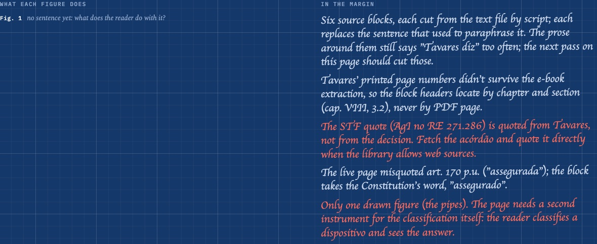

Unzip, the first time by name
Codex ran out of usage, you said "unzip", and I spent the round on rules that make the next weeks cheaper, plus two things you can see.
§1The last lesson
Codex stopped with A17, ônus da prova, approved and unmerged, so I merged it. Processo is 22 of 22 on staging. What's left is the colour sweep, a read of the whole course and the swap, and Codex has a prompt waiting for when it's back.
§2What a figure does, written on the figure

You asked how the SINDIFUMO card was an instrument. It wasn't, and the house rule that should have stopped it has been in the manual for weeks. No gate ever asked the question. So now a figure carries one sentence that readers never see: the verb, what the reader does with it, and which question of the lesson it answers. If nobody can write that sentence honestly, the figure fails. The sentences show on the back of the page, so you can read them too. Most pages say "no sentence yet" for now, and Codex has the job of writing them or failing the figure.
The same back of the page now holds the writer's margin notes. The doubts are in red pencil.
§3Asking up, and counting tokens
Two rules went into the pipeline, both from your list for Olympia. A piece of work Codex finishes now ends with a line on what in its brief was unclear, and with the tokens it spent by stage. When two workers trip on the same unclear point, the brief changes for everyone. The token lines add up in the run's write-up, divided by what shipped, and the biggest stage that isn't building gets cut first.
§4The library, briefed
Your intake design is now a brief Codex will pick up after the swap: books cleaned, cut where they cut themselves, read once, and catalogued piece by piece on cards that links to the pieces it points to. Writers see the whole catalogue and take what they need with one line of why.
§5The stamps, second try

Sequoia's trunk only looked big once a small person stood at its foot. El Capitan is still hard to draw in a few lines. They are waiting for your verdict on the dress.
§6Waiting on you
Whether the dress is right; whether to retire the drying line; whether the site's publish step may read the workshop, which would make the backstage rebuild itself whenever something merges; and whether I may download a corpus of human blog posts to measure our English against.
— the CEO